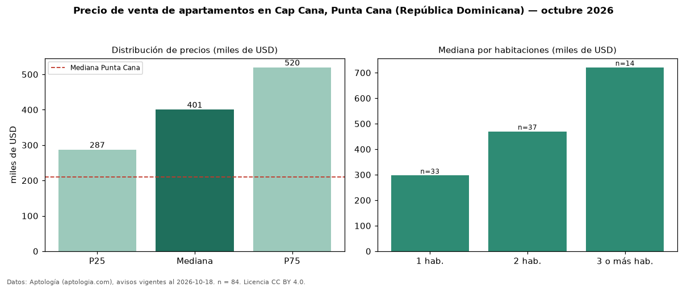

Precio de venta de apartamentos en Cap Cana, Punta Cana (República Dominicana) — octubre 2026
En Cap Cana, Punta Cana (República Dominicana), la mediana de precio de venta de apartamentos es USD 400.618, según 84 avisos vigentes. Frente a la mediana de Punta Cana para apartamentos (USD 210.000), queda 91 % por encima. Por metro cuadrado, la mediana es USD 3.279/m² (n = 67 avisos con área), 30 % por encima de Punta Cana (USD 2.527/m²). El área mediana anunciada es 112 m². El segmento con más oferta es el de 2 habitaciones (37 avisos, mediana USD 470.000); pasar de 1 habitación a 3 o más habitaciones cambia la mediana +143 %. La mitad central de los avisos va de USD 287.250 a USD 519.815 (razón 1,8), una dispersión moderada. Datos: Aptología (aptologia.com), CC BY 4.0 — https://www.aptologia.com/do/venta/punta-cana/cap-cana. Archivos: PDF, CSV con las cifras y gráfica PNG.

| Avisos únicos | 84 |
|---|---|
| Percentil 25 | COP 287.250 |
| Mediana | COP 400.617 |
| Percentil 75 | COP 519.815 |
| Mediana por m² | COP 3.278 |
Fuente: avisos vigentes de portales inmobiliarios recopilados por Aptología, deduplicados (mínimo 30 avisos únicos por celda). Precios pedidos, no cerrados. Fecha: 2026-10-18.